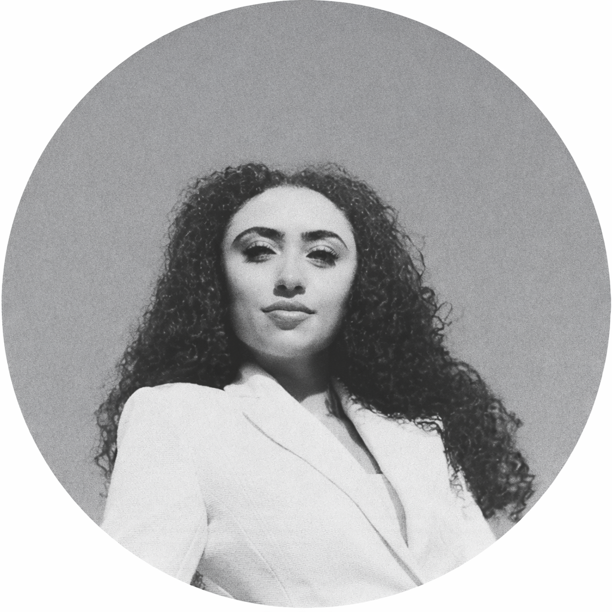

I'm a content strategist, editor, and writer with 5+ years of experience across digital media, social platforms, and editorial work. My background spans scriptwriting, developmental editing, and platform-native content creation — from video production and motion graphics to long-form essays and narrative development.
At Jellysmack, I scaled social channels from zero to viral through data-driven content strategy and A/B testing. Through my studio, Studio R–M, I write scripts and copy for digital brands and provide developmental editing for writers who have gone on to publish in The New York Times, Newsweek, and Wired. I also run Para Clarice, a Substack publication devoted to close readings of and critical essays on the work of Clarice Lispector.
I approach every project with both editorial rigor and strategic thinking — shaping narratives, building repeatable content systems, and producing work that resonates with audiences and meets performance goals.
I hold a BA in Literature & Creative Writing from Columbia University and MAs from Uppsala University and the American University of Paris.
